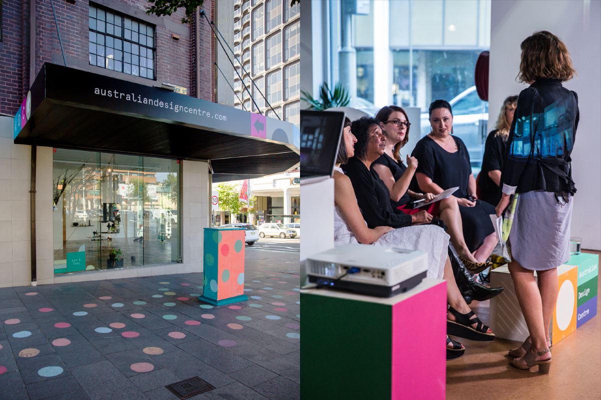
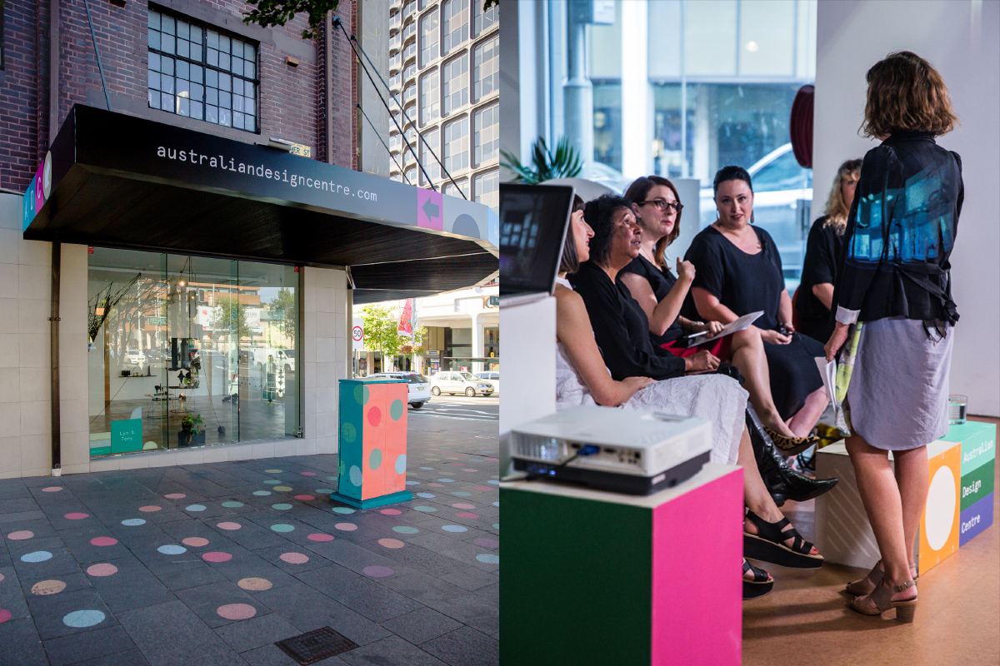
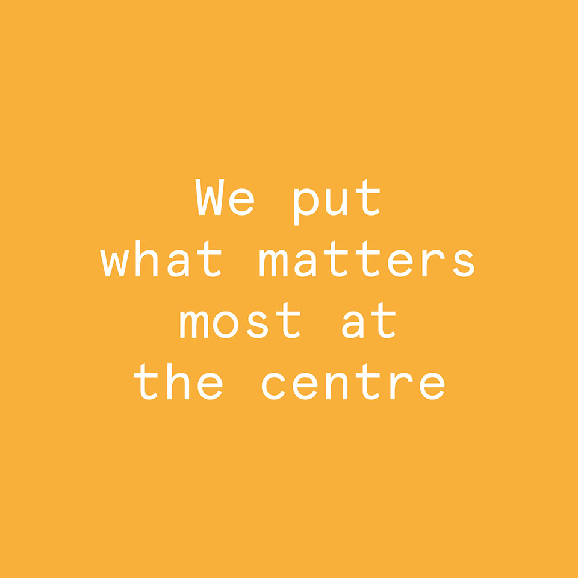

Australian Design Centre
Brand
ADC has been one of Australia’s leading arts and design institutions for the last 50 years. Yet 2015 saw them caught at a crossroads — were they an art gallery, creative think tank, or something else entirely? With a bold new brand, strategy and purpose, we helped ADC discover what’s most important to them.
Projects
In collaboration with
Australia has come a long way in the last half a century. But some things—like a conservative attitude towards the value of creativity—haven’t come far enough. For ADC, this was unacceptable. How could people solve the problems of the future, with the tired thinking and solutions of the past?
ADC needed to revolutionise Australian education – to inspire the next generation of Aussies to think differently, and equip them with the design thinking skills needed to change the world. But for that to happen, their brand (and business) had to change, too.
ADC needed to revolutionise Australian education – to inspire the next generation of Aussies to think differently, and equip them with the design thinking skills needed to change the world. But for that to happen, their brand (and business) had to change, too.
Having established kids as ADC’s new primary focus, we needed to find a way to communicate with them (without excluding our other audiences). So we created a colourful and customisable identity system, inspired by building blocks — the universal symbol of creativity, discovery, and learning through play.
But it’s not all fun and games. While the system encourages curiosity and experimentation, it always puts what matters most at the centre – no matter whether that’s a global issue, an exhibition title, or simply the name of a visiting child.
But it’s not all fun and games. While the system encourages curiosity and experimentation, it always puts what matters most at the centre – no matter whether that’s a global issue, an exhibition title, or simply the name of a visiting child.
 

|  |